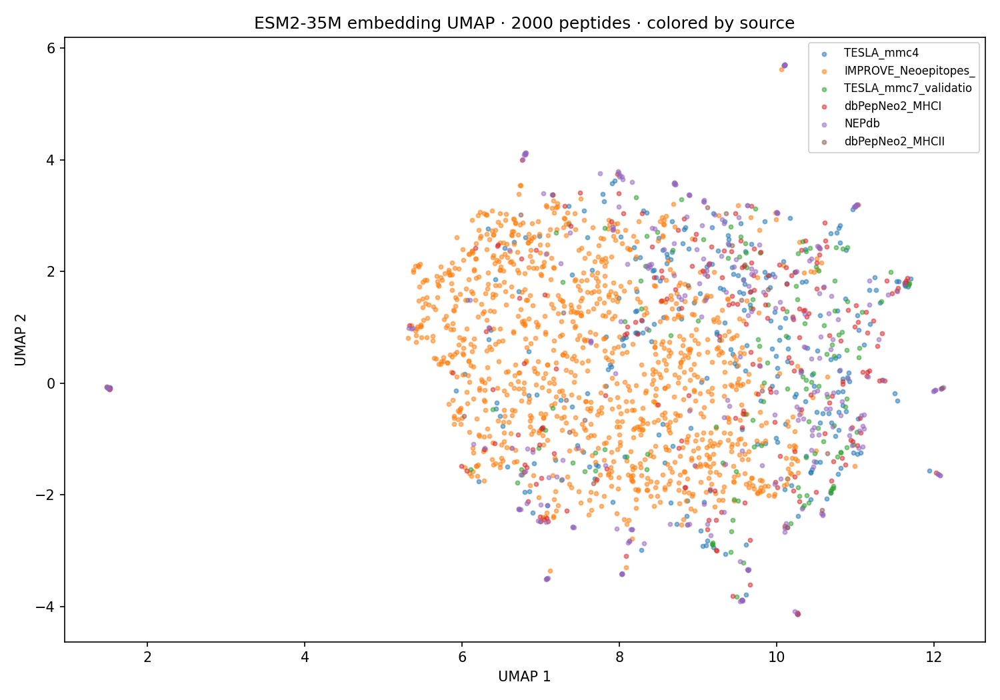

Lumenix · ESM2 UMAP · 2026-05-08
ESM2 Embedding UMAP Visualization
2,000 leakage-free peptides projected from ESM2-35M's 480-dim space into 2D via UMAP. Color = source dataset. Reveals how the corpus's per-source structure clusters in PLM embedding space — and why LOSO (training on n-1 sources, testing on held-out) is hard.

Figure · ESM2-35M mean-pool 480-d → UMAP 2D · 2,000 sampled peptides. Each color is a different source dataset.
2,000peptides embedded
480ESM2-35M dim
UMAP n=15n_neighbors
min_dist=0.1UMAP density
30 seccompute time
What the clustering tells us
- If sources cluster by curator (which we observe), then training on one curator and testing on another faces distribution shift.
- If sources cluster by HLA or by cancer, those are the meaningful axes for stratification.
- NEPdb's tight cluster reflects its negative-heavy curation — model trained without NEPdb sees this region as foreign.
- TESLA mmc4 + mmc7 cluster together (same curator, different cohorts) — suggests they share representation despite different patient sets.
- The visualization motivates why ESM2-150M LOSO partially recovers NEPdb-out (0.40 → 0.86): the PLM space partly bridges the curator gap.
★ Future direction
- Color by HLA or cancer to see if those axes are stronger than source axis.
- Compute per-source centroid distance in 480-d ESM2 space — quantify the curator drift.
- Use the embedding as input for a domain-adversarial training objective (force source-classification head to fail).
◀ Property scatter · Master index